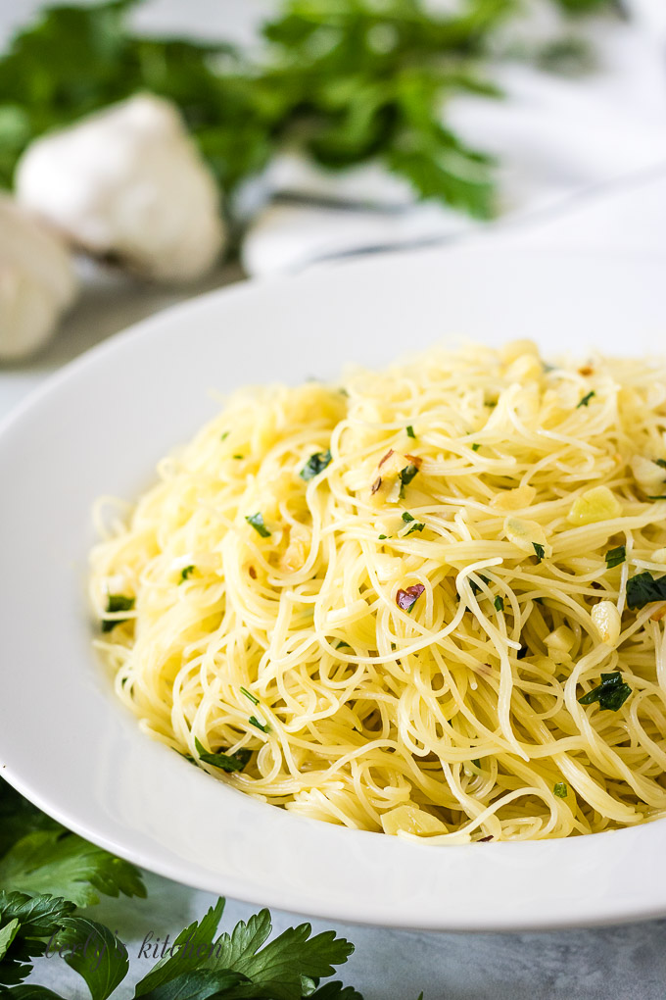

Angel Hair Pasta

Description
Couldn't get enough of Italy with our chicken parmesan recipe? Maybe
you're looking for the perfect pairing to that! This dish will have you
singing the Gospel of Mark in no time.
Do you just love pasta but always feel guilty because of the
carbs? Well, if you purchase just the right pasta type, you won't have to
worry about that!
This recipe uses an angel hair pasta that is packed with protein! At 10g
per serving, you can rest assured that you are getting all the nutrition
you need from these yummy noodles. It's perfect for bodybuilders,
endurance athletes, or just a regular ol chap looking to have a meal while
binging their favorite Netflix show. Get started!
Ingrediences
- 1 pack of angel hair pasta (protein-based)
- 2c water
- 1 tsp salt
- 1c shredded parmesan cheese
- .5c minced garlic)
- .25c chili flakes
- parsley (to taste)
- .5c olive oil
Steps
- Boil your water
- Add salt to the water and then your pasta noodles
-
Cook the noodles al dente and, when done, remove from the stove but
do not drain the water
-
Place a large pan over very low heat and add your olive oil, minced
garlic, and chili flakes
-
Once the oil has warmed up and you can smell the garlic, add your pasta
noodles directly from the water (but, like, without the water, obvi)
- Add the grated parmesan cheese and stir
- Cook to your liking and serve when completed.
- Enjoy!
Return to the main page